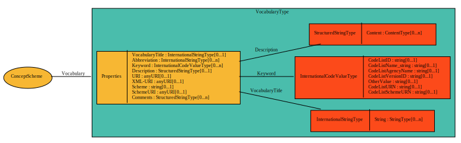

VocabularyType¶
Provides information about the vocabulary used to create a concept scheme.
Contents
Relationships¶

Properties¶
VocabularyTitle¶
- Type
- /reusable-types/InternationalStringType/index
- Cardinality
- 0..1
Full title of vocabulary.
Abbreviation¶
- Type
- /reusable-types/InternationalStringType/index
- Cardinality
- 0..n
Abbreviation of vocabulary title.
Keyword¶
- Type
- /reusable-types/InternationalCodeValueType/index
- Cardinality
- 0..n
Keywords that describe the vocabulary.
Description¶
- Type
- /reusable-types/StructuredStringType/index
- Cardinality
- 0..1
A description of the content and purpose of the Vocabulary. May be expressed in multiple languages and supports the use of structured content.
URI¶
- Type
- anyURI
- Cardinality
- 0..1
URI to external resource providing information about the vocabulary (general description, main web page).
Scheme¶
- Type
- string
- Cardinality
- 0..1
Textual description of the XML scheme in which the classification is written.